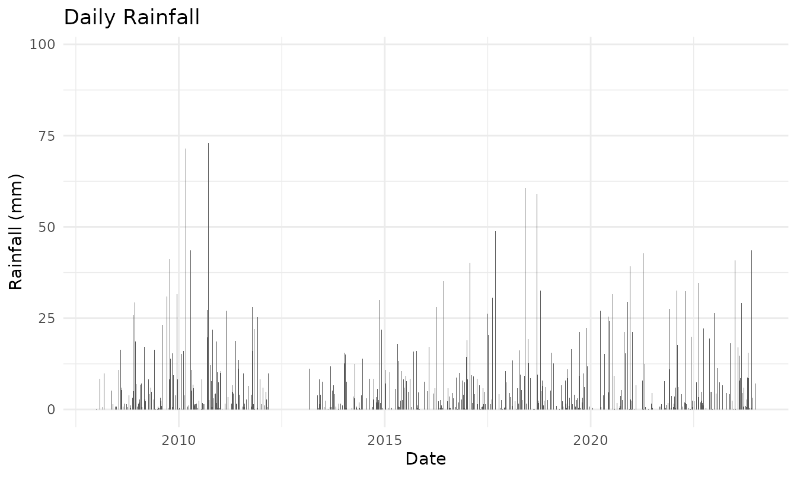
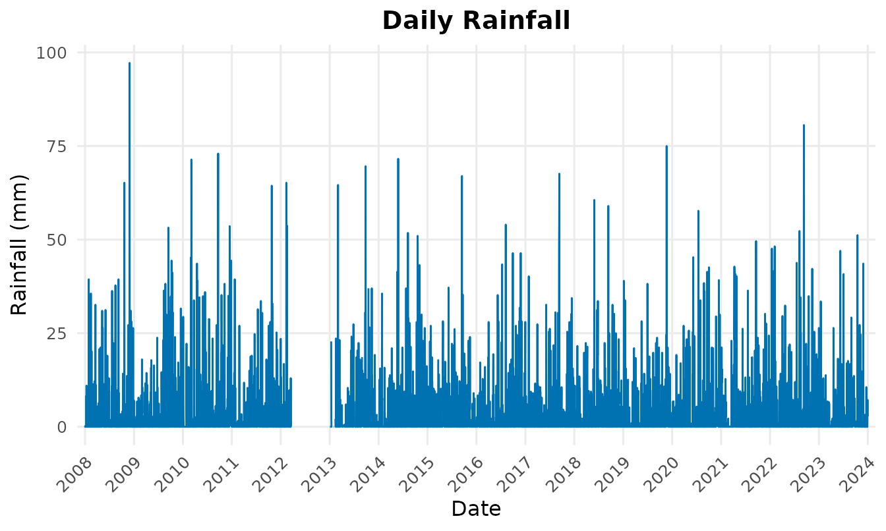
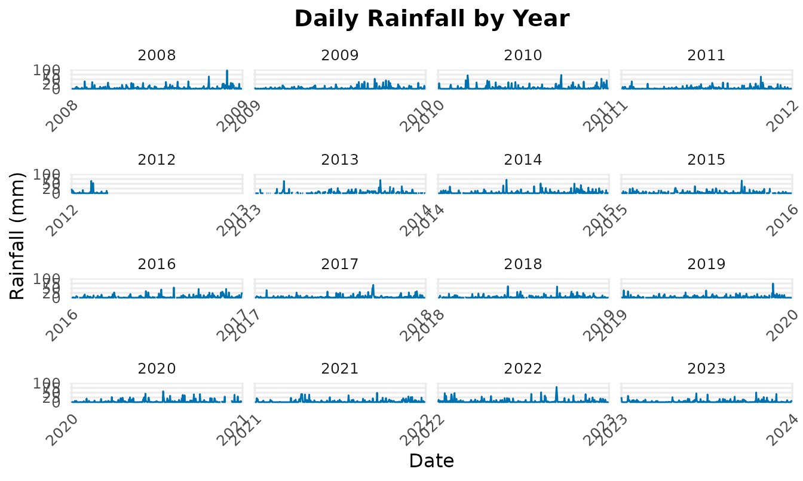

Why climecol?
climecol helps you archive, explore, and use
climate/weather data in ecological and infectious-disease models:
Ships example daily weather data (Newfoundland) so you can prototype fast.
Provides photoperiod (daylength) functions (no dependencies) for seasonal drivers.
Includes simple plotting/helpers for quick QA and communication.
Designed for reproducible workflows (works offline, CI-friendly).
Installation
# install.packages("devtools")
devtools::install_github("jbaafi/climecol")Load the package:
Photoperiod (daylength)
The photoperiod helpers implement a standard solar-geometry approximation (Forsythe et al., 1995) and return hours of daylight from date and latitude (timezone/longitude not required).
Daily photoperiod for a site
pp_nl <- photoperiod_year(2024, location = "St John's")
head(pp_nl)
#> date daylength_hours lat location
#> 1 2024-01-01 8.517220 47.56 st_johns
#> 2 2024-01-02 8.532937 47.56 st_johns
#> 3 2024-01-03 8.549903 47.56 st_johns
#> 4 2024-01-04 8.568104 47.56 st_johns
#> 5 2024-01-05 8.587527 47.56 st_johns
#> 6 2024-01-06 8.608155 47.56 st_johnsQuick plot:
plot(pp_nl$date, pp_nl$daylength_hours, type = "l",
xlab = "Date", ylab = "Daylength (hours)",
main = "Photoperiod — St. John's, NL (2024)")Monthly means and multi-site comparison
pp_nl_m <- photoperiod_year(2024, location = "St John's", aggregate = "month")
pp_nb_m <- photoperiod_year(2024, location = "Saint John", aggregate = "month")
head(pp_nl_m); head(pp_nb_m)
#> date daylength_hours lat location
#> 1 2024-01-01 8.91655 47.56 st_johns
#> 2 2024-02-01 10.20720 47.56 st_johns
#> 3 2024-03-01 11.88795 47.56 st_johns
#> 4 2024-04-01 13.65218 47.56 st_johns
#> 5 2024-05-01 15.16109 47.56 st_johns
#> 6 2024-06-01 15.91251 47.56 st_johns
#> date daylength_hours lat location
#> 1 2024-01-01 9.172983 45.27 saint_john
#> 2 2024-02-01 10.354056 45.27 saint_john
#> 3 2024-03-01 11.902529 45.27 saint_john
#> 4 2024-04-01 13.528932 45.27 saint_john
#> 5 2024-05-01 14.910968 45.27 saint_john
#> 6 2024-06-01 15.593079 45.27 saint_johnKeys are matched case-insensitively; punctuation/spacing ignored.
"St John's","st_johns","St.Johns"→st_johns(NL);"Saint John"/"st john"→saint_john(NB).
If you passlatwithoutlocation, results are labeledlat_<value>.
Built-in weather data (temperature & rainfall)
climecol ships a Newfoundland daily weather dataset for
examples and testing.
data(weather_nl)
str(weather_nl)
#> tibble [5,844 × 10] (S3: tbl_df/tbl/data.frame)
#> $ Date : Date[1:5844], format: "2008-01-01" "2008-01-02" ...
#> $ Year : int [1:5844] 2008 2008 2008 2008 2008 2008 2008 2008 2008 2008 ...
#> $ Month : int [1:5844] 1 1 1 1 1 1 1 1 1 1 ...
#> $ Day : int [1:5844] 1 2 3 4 5 6 7 8 9 10 ...
#> $ T_min_C : num [1:5844] -6.6 -8.1 -11 -12.6 -9.6 -10.5 -4.2 -1.2 -2.5 0 ...
#> $ T_max_C : num [1:5844] 1.6 2 -0.4 -5.9 -2.4 -2.5 2.5 3.8 0.5 9.5 ...
#> $ T_mean_C : num [1:5844] -2.5 -3.1 -5.7 -9.3 -6 -6.5 -0.9 1.3 -1 4.8 ...
#> $ Rain_mm : num [1:5844] 0.2 0 0.2 0 0 0 0 0.6 0.8 8.2 ...
#> $ Precip_mm: num [1:5844] 2 4.5 0.2 0 1.6 2.2 0 0.6 1.8 8.2 ...
#> $ Snow_cm : num [1:5844] 1.8 5 0 0 2.6 6.4 0 0 1.8 0 ...Columns and types
cols <- data.frame(
column = names(weather_nl),
class = vapply(weather_nl, function(x) paste(class(x), collapse="/"), character(1)),
example = vapply(weather_nl, function(x) {
i <- which(!is.na(x))[1]; if (length(i) == 0L) NA_character_ else as.character(x[i])
}, character(1)),
row.names = NULL
)
knitr::kable(cols, caption = "Columns in `weather_nl` with example values")| column | class | example |
|---|---|---|
| Date | Date | 2008-01-01 |
| Year | integer | 2008 |
| Month | integer | 1 |
| Day | integer | 1 |
| T_min_C | numeric | -6.6 |
| T_max_C | numeric | 1.6 |
| T_mean_C | numeric | -2.5 |
| Rain_mm | numeric | 0.2 |
| Precip_mm | numeric | 2 |
| Snow_cm | numeric | 1.8 |
Quick rainfall exploration
Use the package helper (works out of the box):
plot_rainfall(weather_nl)
Or compute monthly rainfall yourself (robust to different column names):
# try to detect date and rainfall columns
date_col <- names(weather_nl)[grepl("date", names(weather_nl), ignore.case=TRUE)][1]
rain_col <- names(weather_nl)[grepl("rain|precip", names(weather_nl), ignore.case=TRUE)][1]
if (!is.na(date_col) && !is.na(rain_col)) {
dat <- weather_nl
dat$..date <- as.Date(dat[[date_col]])
dat$..rain <- as.numeric(dat[[rain_col]])
dat$ym <- format(dat$..date, "%Y-%m") # <-- make a real column
mon <- aggregate(..rain ~ ym, dat, sum, na.rm = TRUE)
names(mon) <- c("year_month", "rain_mm")
head(mon)
plot(as.Date(paste0(mon$year_month, "-01")), mon$rain_mm, type="h", lwd=4,
xlab = "Month", ylab = "Total rainfall (mm)",
main = "Monthly rainfall totals")
} else {
message("Could not auto-detect date/rain columns.")
}
Temperature overview (if columns exist)
# Attempt to detect temperature columns
nms <- names(weather_nl)
tmax <- nms[grepl("tmax|temp_max|max", nms, ignore.case=TRUE)][1]
tmin <- nms[grepl("tmin|temp_min|min", nms, ignore.case=TRUE)][1]
tmean <- nms[grepl("tmean|temp_mean|mean", nms, ignore.case=TRUE)][1]
date_col <- nms[grepl("date", nms, ignore.case=TRUE)][1]
if (!is.na(date_col) && (!is.na(tmean) || (!is.na(tmax) && !is.na(tmin)))) {
dat <- weather_nl
dat$..date <- as.Date(dat[[date_col]])
if (is.na(tmean)) {
dat$..tmean <- rowMeans(cbind(as.numeric(dat[[tmax]]), as.numeric(dat[[tmin]])), na.rm = TRUE)
} else {
dat$..tmean <- as.numeric(dat[[tmean]])
}
dat$ym <- format(dat$..date, "%Y-%m") # <-- real column
monT <- aggregate(..tmean ~ ym, dat, mean, na.rm = TRUE)
names(monT) <- c("year_month", "tmean_C")
head(monT)
plot(as.Date(paste0(monT$year_month, "-01")), monT$tmean_C, type="l", lwd=2,
xlab = "Month", ylab = "Mean temperature (°C)",
main = "Monthly mean temperature")
} else {
message("Could not auto-detect temperature columns.")
}
Export photoperiod for modeling
out_file <- file.path(tempdir(), "photoperiod_st_johns_2024.csv")
write.csv(pp_nl, out_file, row.names = FALSE)
out_file
#> [1] "/tmp/Rtmp4EpknS/photoperiod_st_johns_2024.csv"The file is written to a temporary folder during vignette build. Replace tempdir() with your project path in real workflows.
Reference
Forsythe, W. C., Rykiel, E. J., Stahl, R. S., Wu, H., & Schoolfield, R. M. (1995).
A model comparison for daylength as a function of latitude and day of year. Ecological Modelling, 80, 87–95.
Session info